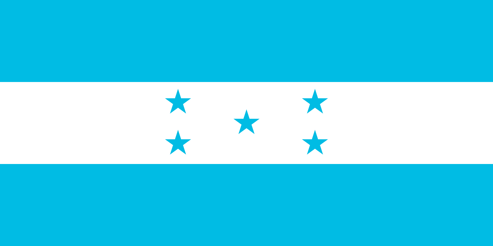

About Me
My name is Josué Gotay and sadly I don't have a nickname. I was born in Honduras which is a county of Center America with a beautiful bay located in the department where I live. I currently work at Dole as a scale operator. I don't have children but is my desire to have a family in the future. I like to play the guitar and make beats.
Trujillo, Honduras

Official Flag of Honduras
Honduras, officially the Republic of Honduras, is a country in Central America. It is bordered to the west by Guatemala, to the southwest by El Salvador, to the southeast by Nicaragua, to the south by the Pacific Ocean at the Gulf of Fonseca, and to the north by the Gulf of Honduras, a large inlet of the Caribbean Sea. Its capital and largest city is Tegucigalpa.